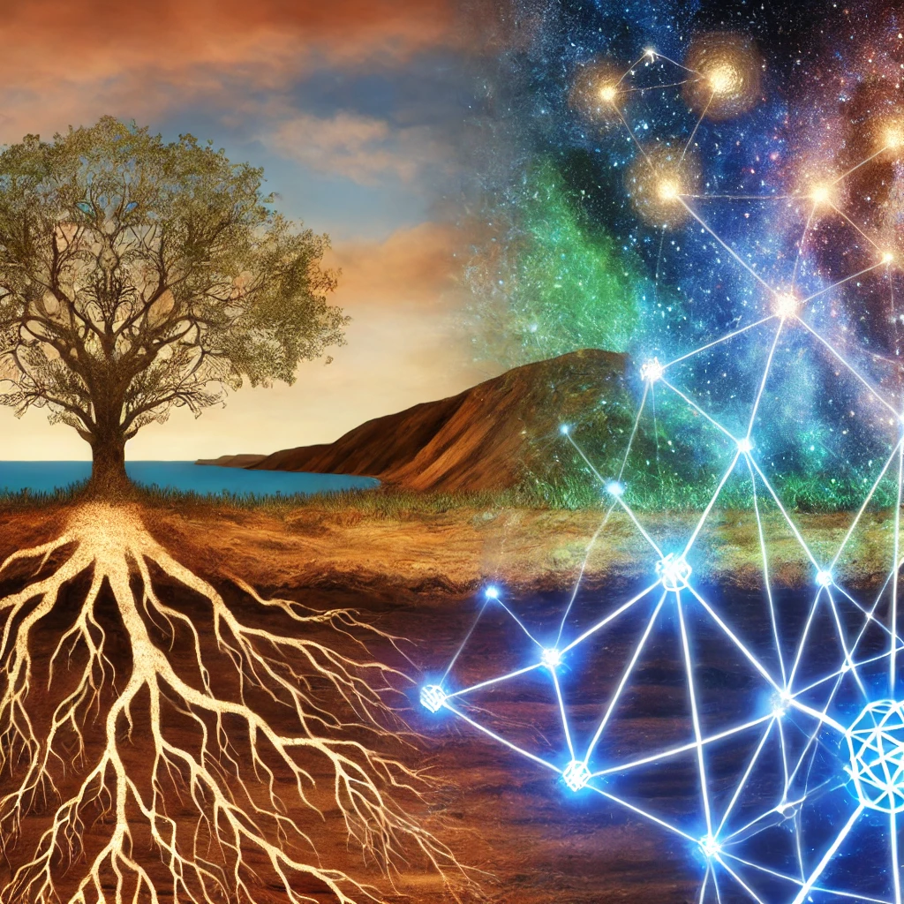

Overview
Welcome to our local-to-global TCS mentorship program!
Audience: PhD and undergraduate students interested in Theoretical Computer Science (TCS) from CS, Math, ECE, Physics, etc. Postdocs are also welcome to join.
Goals: The goal is to provide a space to informally discuss research, careers, etc. Mentorship can happen at all scales (more senior PhD students can help junior ones navigate the program, junior PhD students can help undergraduates understand PhD applications and TCS fields, and so on) and in both directions of seniority (I can learn more about your TCS fields, etc).
Budget: My current budget is 10$ (amortized) per student, increasing linearity up to a maximum of 150$. You decide on the pastries to be divided among everyone.
Additional Rules: Other faculty members are welcome to join and are kindly encouraged to contribute more pastries (or coffee) if needed.
Our Gatherings
Please let me know if you want to volunteer to take pictures of our gatherings. It would be nice to build an archive of such photos over time.- On 11/06/24, we meet at Bake Lab.